Lagos State University / Faculty of Computing
Database Design and Implementation of DAMS Micro
A microfinance accounting and lending system
CSC 394: Practical Application of Database Management in Industries
PostgreSQL 18.1 / Laravel 13.35.0 / PHP 8.4
Lagos State University
2026 / academic session and submission month to be completed
Declaration
I, Aje Damilola, with matriculation number 230591336, declare that this report on the database design and implementation of DAMS Micro was prepared by me for CSC 394. The schema, migrations, seeders, raw SQL statements and test results described in this report were produced as part of the DAMS Micro project.
Where the work of others is used, it is acknowledged in the references. The report has not been submitted for another course or programme.
Abstract
This report documents the relational database behind DAMS Micro, a microfinance accounting and lending system built with Laravel and PostgreSQL. The database contains sixteen domain tables and two hundred and one columns. It supports a general ledger, customer records, loan products, loan schedules, repayments, accruals, opening balances and operational settings. The design uses UUID primary keys for most entities, numeric columns for money, foreign keys for the main relationships and indexed lookup columns for the loan domain.
The report explains the entity-relationship model, the relational schema, key and constraint choices, and the index coverage of the live PostgreSQL database. It then shows how Laravel migrations and seeders build and populate the schema, and how selected customer, journal and loan CRUD operations were converted from Eloquent writes to bound raw SQL using the DB facade. The SQL queries used for reporting are presented with their results. Query plans are examined with EXPLAIN (ANALYZE, BUFFERS). The report closes with the Laravel database tools used in the project, the DBeaver workflow, the test results and the conclusion.
List of figures, tables and listings
Figures
| Figure | Title |
|---|---|
| 2.1 | Entity-relationship diagram for the general ledger |
| 2.2 | Entity-relationship diagram for the loan domain |
| 3.1 | Migration and seeding flow |
| 3.2 | CRUD request flow through Laravel and PostgreSQL |
| 4.1 | Row counts for the main database tables |
| 4.2 | Loan status distribution |
| 4.3 | Top account categories by number of accounts |
| 4.4 | Planning and execution times for three queries |
| 4.5 | DBeaver Database Navigator and loan_customers table |
| 4.6 | DBeaver loans table |
| 4.7 | DBeaver journal_entries table |
| 4.8 | DBeaver SQL editor and result grid |
| 4.9 | DBeaver execution plan |
Tables
| Table | Title |
|---|---|
| 2.1 | Domain tables and their purposes |
| 2.2 | Data type patterns |
| 2.3 | Constraint inventory |
| 2.4 | Index coverage of selected tables |
| 3.1 | Eloquent compared with raw SQL |
| 3.2 | Operations converted to raw SQL |
| 4.1 | SQL query catalogue |
| 4.2 | Customer ledger results |
| 4.3 | Loan portfolio results |
| 4.4 | Query plan summary |
| 4.5 | Laravel database tools used in the project |
| 4.6 | Test summary |
Listings
| Listing | Title |
|---|---|
| 3.1 | Loan customer migration excerpt |
| 3.2 | Customer listing with a correlated balance subquery |
| 3.3 | Customer update with bound values |
| 3.4 | Journal transaction insert |
| 3.5 | Journal update with a controlled column list |
| 3.6 | Journal delete for drafts |
| 3.7 | Journal status aggregate |
| 3.8 | Loan listing with joins and optional filters |
| 3.9 | Loan status update |
| 4.1 | Customer ledger query |
| 4.2 | Loan portfolio aggregate query |
| 4.3 | Journal status summary |
| 4.4 | Account category totals |
Chapter One Introduction
1.1 Background
CSC 394 applies database management concepts to a working software system. This report uses DAMS Micro, a microfinance accounting and lending application, as the subject. The application records double-entry journals, organises a chart of accounts, registers customers, books loans, generates repayment schedules, posts repayments and produces financial reports. Those activities depend on a database that preserves relationships, enforces the right level of integrity and answers reporting queries efficiently.
DAMS Micro was inspired by the accounting software project I encountered during my industrial training at Golden Edge Softech. This report does not describe the client's database. It documents the independent prototype and uses only its own schema, seed data and code.
The database is PostgreSQL 18.1, and the application is built with Laravel 13.35.0 on PHP 8.4. At the time of the data snapshot, the schema contained sixteen domain tables, two hundred and one columns, twenty-one foreign keys and eighty-four accounts. The seeded data included twenty-one journal transactions, forty-nine journal entries, eight customers, nine loans and sixty-one repayment schedules. These numbers are used throughout the report to make the discussion concrete.
1.2 Aim and objectives
The aim of the report is to document the database design and data access layer of DAMS Micro. The objectives are to:
- describe the entities, relationships and data types in the database;
- explain the key, constraint and index choices that support the ledger and loan workflows;
- show how Laravel migrations and seeders create and populate the schema;
- convert selected CRUD operations from Eloquent writes to bound raw SQL and verify that they still work;
- present reporting queries with their results and inspect their query plans;
- describe the integrity rules and query performance characteristics of the implemented schema; and
- document the Laravel database tools and DBeaver workflow used in the project.
1.3 Scope and boundaries
The report covers the domain tables used by the general ledger and the loan modules. Laravel's infrastructure tables for users, sessions, cache and queues are outside the scope of this report. The converted CRUD operations cover customer listing and maintenance, draft journal creation and maintenance, and loan listing and status changes. Loan booking, schedule generation, disbursement and repayment remain in the existing service layer because they involve several related writes and accounting postings.
The data used in the report is demonstration data generated by the project's seeders. It is not production or client data. The DBeaver section documents the desktop client used to inspect the schema and run queries; the figures show the local connection.
1.4 Methodology and tools
The project work followed five steps. First, I inspected the migration files and compared them with the live PostgreSQL schema. Second, I loaded the project's seeders into the development database so that the queries and plans would operate on representative data. Third, I converted selected CRUD paths to raw SQL using the Laravel DB facade with bound parameters. Fourth, I ran the Pest test suite and a separate PostgreSQL write check inside a rolled-back transaction. Fifth, I used EXPLAIN (ANALYZE, BUFFERS) and catalog queries to inspect plans, indexes and constraints.
| Component | Version or tool |
|---|---|
| Database | PostgreSQL 18.1, database dammy_micro |
| Application | Laravel 13.35.0, PHP 8.4 |
| Database client | DBeaver, connected to the local PostgreSQL instance |
| Testing | Pest on SQLite in memory; separate raw SQL verification on PostgreSQL |
| Schema inspection | Laravel Boost schema and query tools, information_schema, pg_indexes |
| Query analysis | EXPLAIN (ANALYZE, BUFFERS, FORMAT TEXT) |
Chapter Two Database Design
2.1 Data requirements
The data model serves three connected areas. The general ledger stores companies, ledgers, accounts, journal transactions and journal entries, with opening balances and end-of-day operations supporting period control. The lending area stores customers, identity documents, loan products, product-to-account mappings, loans, schedules, repayments and interest accruals. The operations area stores system settings such as the business date and the balance-sheet layout.
Table 2.1 lists the sixteen domain tables, their purposes and their live row counts at the time of the data snapshot. The counts come from the seeded development database, not from estimates.
| Table | Purpose | Rows | Cols | FKs | Idx |
|---|---|---|---|---|---|
companies | Tenant record for each organisation. | 1 | 5 | 0 | 1 |
ledgers | Chart containers owned by a company. | 2 | 6 | 1 | 1 |
accounts | Chart of accounts, hierarchy and cached display balance. | 84 | 13 | 1 | 1 |
journal_transactions | Journal header with reference, status and effective date. | 21 | 9 | 0 | 1 |
journal_entries | Debit and credit lines, amount and running balance. | 49 | 8 | 0 | 1 |
account_opening_balances | Daily balance snapshots used by end-of-day close. | 8 | 6 | 1 | 1 |
eod_operations | End-of-day run status and logs. | 0 | 7 | 0 | 1 |
system_settings | Business date and balance-sheet layout as JSON. | 2 | 5 | 0 | 1 |
loan_customers | Borrower identity, KYC status and linked GL account. | 8 | 44 | 2 | 7 |
loan_customer_documents | Supporting KYC documents for a customer. | 0 | 9 | 1 | 2 |
loan_products | Interest, tenor, fee and penalty rules for a product. | 5 | 19 | 1 | 3 |
loan_product_accounts | Six accounting mappings per loan product. | 24 | 6 | 2 | 3 |
loans | Loan header, principal, status and journal links. | 9 | 26 | 5 | 6 |
loan_schedules | Instalment amounts, due dates and repayment progress. | 61 | 17 | 1 | 3 |
loan_repayments | Payments and their principal, interest, fee and penalty split. | 2 | 13 | 3 | 2 |
loan_accruals | Interest accrual records and their journals. | 5 | 8 | 3 | 3 |
2.2 General ledger model
Figure 2.1 shows the general ledger relationships. A company owns one or more ledgers, and a ledger owns accounts. Accounts can point to a parent account, forming a hierarchy, and a control account can point to a subledger. Journal transactions group journal entries, and each entry belongs to one account and one transaction. Opening balances snapshot account values for end-of-day processing.
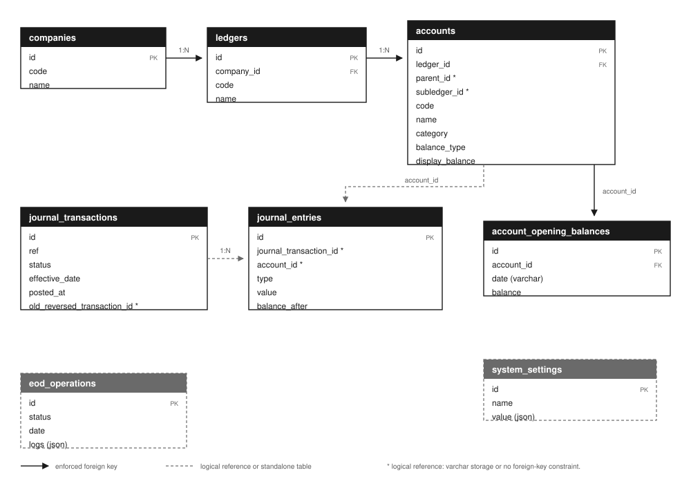
The model separates the header of a journal from its lines. The header carries the reference, status and effective date; the lines carry the account, side, amount and running balance. This separation supports the double-entry rule because the lines can be summed and compared before the header moves to submitted or posted. It also lets the application reverse a posted transaction by creating a second header with mirrored lines instead of editing the original.
Several relationships in this model are logical rather than enforced. accounts.parent_id and accounts.subledger_id are stored as varchar(255) even though they hold UUID values, so PostgreSQL cannot enforce foreign keys on them. The same applies to journal_transactions.old_reversed_transaction_id. The two links from journal_entries are also logical in the live schema: the columns are UUIDs, and the migration does not add the foreign-key constraints. The prototype preserves these relationships in the application services.
2.3 Loan domain model
The loan domain extends the ledger with borrowers and lending events. A company owns customers, products and loans. A customer and a product each contribute to a loan, and a loan owns its schedule, repayments and accruals. The product's six accounting mappings connect product operations to ledger accounts. Customer documents hold KYC evidence.
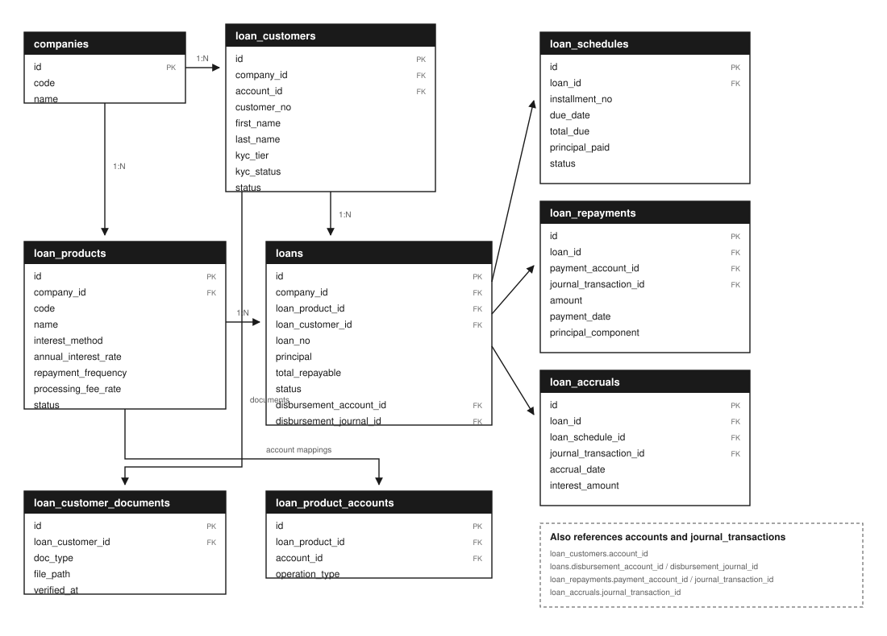
The lifecycle explains the direction of the relationships. A loan starts in draft or pending approval, becomes approved, then active after disbursement, and finally closed, rejected or written off. Schedules are created at booking. Repayments are recorded against the loan and allocate value to penalty, fee, interest and principal. Accruals record interest earned over time. Each of those events can create a journal transaction, which is why the loan tables carry journal identifiers.
The schema preserves the loan history instead of overwriting it. Repayments and accruals are separate rows, and the loan header holds summary totals. That design supports the loan statement and the ledger, but it also means the summary columns and the detail rows must be kept consistent by the application service. The seeded data shows the intended variety: three active loans, one each in draft, pending approval, approved, rejected, closed and written-off states.
2.4 Relational schema and data types
The schema mixes UUID and bigint keys. Most domain entities use UUID primary keys: companies, ledgers, accounts, journal transactions, customers, products, loans, schedules, repayments and accruals. Journal entries use a bigint identity key because they are high-volume child rows. This is a reasonable compromise: UUIDs make external identifiers hard to guess and allow identifiers to be generated before an insert, while a compact bigint key keeps the largest table's index smaller.
| Pattern | Examples | Purpose and caution |
|---|---|---|
| UUID primary keys | accounts.id, loans.id, journal_transactions.id | Generated by the application; globally unique. Random UUIDs are less insertion-friendly than sequential keys, but the domain tables are modest in size. |
| Bigint identity | journal_entries.id, account_opening_balances.id | Compact and sequential. Appropriate for append-heavy child tables. |
numeric(20,2) | Loan principal, repayments, schedule amounts | Exact decimal storage for money. Two decimal places fit the loan domain. |
numeric(20,4) | Journal entry value, account balance, opening balance | Four decimal places support ledger arithmetic. The loan tables use two decimal places, so the conversion between the scales happens in the application. |
| Dates and timestamps | effective_date, due_date, posted_at | Business dates are separate from creation timestamps. PostgreSQL stores them as date or timestamp types. |
| JSON | system_settings.value, eod_operations.logs | Flexible configuration and operational logs. JSON values are not constrained by column-level types. |
| Soft deletes | loans.deleted_at, loan_customers.deleted_at | Preserves history while hiding removed records. Every raw query must add deleted_at is null. |
One type choice deserves emphasis. journal_entries.value and accounts.display_balance use four decimal places, while loans.principal, loan_schedules.total_due and loan_repayments.amount use two. The application converts between them with bcmath. The database does not enforce a single scale, so the conversion rule is part of the application layer and is applied whenever a loan amount reaches the ledger.
2.5 Keys, constraints and normalization
The schema is largely in third normal form. Each table has a primary key, descriptive attributes depend on that key, and repeating groups are moved into child tables. Journal entries are a child of journal transactions; schedules, repayments and accruals are children of loans; product-account mappings are a child of loan products. The chart of accounts uses a parent reference instead of repeating the hierarchy on every row.
There are deliberate denormalizations. accounts.display_balance caches a balance that can be recomputed from posted journal entries, and the loan header stores totals that can be derived from schedules and repayments. These caches make list and report queries cheaper, but they create a consistency obligation. The application rebuilds ledger balances during end-of-day processing, and the loan service updates the header when a loan event changes the schedule.
| Constraint | Where it appears | What it protects |
|---|---|---|
| Primary keys | All sixteen domain tables | Unique row identity. |
| Foreign keys | 21 relationships, mainly loan and ledger ownership | Referential integrity for enforced links. |
| Unique keys | customer_no, loan_no, company-scoped phone, BVN and NIN | Prevents duplicate business identifiers. |
| Composite unique keys | loan_schedules (loan_id, installment_no), loan_product_accounts (loan_product_id, operation_type) | Prevents duplicate instalments and duplicate operation mappings. |
| Check constraints | journal_entries.type, accounts.balance_type, eod_operations.status | Restricts a small set of enumerated values. |
| Soft-delete filters | Application queries on loans and customers | Hides deleted rows, but is not a database constraint. |
The schema divides its rules between the database and the application. journal_entries has a check on the entry type but no foreign keys to its transaction or account. journal_transactions.ref is not unique, and accounts.code is not unique within a ledger. The service layer performs these checks before writing, so the database constraints and the application rules are used together.
2.6 Index design
Indexes are concentrated in the loan tables. loan_customers has seven indexes, including company-scoped phone, BVN, NIN and status indexes. loans has six, including customer, product and company-status indexes. loan_schedules and loan_accruals have composite indexes that match their foreign-key and date filters. The ledger tables are much lighter: accounts, journal_transactions and journal_entries each have only their primary-key index.
| Table | Indexes | Coverage |
|---|---|---|
loan_customers | 7 | Strong: unique customer number plus company-scoped phone, BVN, NIN, KYC and status lookups. |
loans | 6 | Good for loan number, company-status, customer and product. Disbursement account and journal columns are unindexed. |
loan_schedules | 3 | Unique instalment per loan and due-date lookups. |
loan_repayments | 2 | Loan and payment-date lookups; journal and payment-account columns are unindexed. |
loan_accruals | 3 | Loan-date and schedule-date indexes; journal column is unindexed. |
accounts | 1 | Primary key only. No index on ledger_id, parent_id, subledger_id or code. |
journal_transactions | 1 | Primary key only. No index on ref, status or effective_date. |
journal_entries | 1 | Primary key only. No index on journal_transaction_id or account_id, and no foreign keys. |
account_opening_balances | 1 | Primary key only. No index on account_id or date. |
A catalog query found ten foreign-key columns without a leading index, including accounts.ledger_id, loan_customers.account_id and loans.disbursement_journal_id. The logical reference journal_entries.account_id also has no foreign key or index. PostgreSQL does not create an index automatically for a foreign key. At the current size, the planner often chooses a sequential scan because the tables fit in a few pages. Section 4.3 presents the plans for the main queries at this data size.
Chapter Three Implementation
3.1 Laravel database layer
Laravel connects to PostgreSQL through PDO. The connection is configured in config/database.php and the environment file, and the pgsql driver supplies the host, port, database name, username and password. The application uses three data-access styles. Eloquent models map tables to classes and define relationships, casts and soft deletes. The query builder provides a fluent interface for common SQL. The DB facade executes raw SQL through DB::select, DB::insert, DB::update and DB::delete.
The project contains twenty migration files, sixteen domain tables and the standard Laravel tables for users, sessions, cache and queues. The models mirror the domain: Company, Ledger, Account, JournalTransaction, JournalEntry, LoanCustomer, LoanProduct, Loan, LoanSchedule, LoanRepayment and LoanAccrual. The ledger and loan services use these models for relationship-rich work, while the converted CRUD paths use explicit SQL where the query shape matters.
3.2 Migrations
Migrations are versioned schema files. Each up() method creates or alters a table, and down() reverses it. Listing 3.1 is an abridged version of the loan_customers migration. It shows the pattern used across the schema: a UUID primary key, a unique business number, a company foreign key with cascade delete, a nullable account foreign key with null-on-delete, timestamps, soft deletes and composite unique indexes.
Schema::create('loan_customers', function (Blueprint $table) {
$table->uuid('id')->primary();
$table->string('customer_no')->unique();
$table->foreignIdFor(Company::class)->constrained()->onDelete('cascade');
$table->uuid('account_id')->nullable();
$table->foreign('account_id')->references('id')->on('accounts')->nullOnDelete();
$table->string('customer_type')->default('individual');
$table->string('first_name');
$table->string('middle_name')->nullable();
$table->string('last_name');
// ... identity, contact and KYC columns omitted ...
$table->string('kyc_tier')->default('tier3');
$table->string('kyc_status')->default('pending');
$table->string('status')->default('active');
$table->timestamps();
$table->softDeletes();
$table->unique(['company_id', 'phone']);
$table->unique(['company_id', 'bvn']);
$table->unique(['company_id', 'nin']);
$table->index(['company_id', 'kyc_status']);
$table->index(['company_id', 'status']);
});database/migrations/2026_10_24_000001_create_loan_customers_table.php. Comment and some columns omitted for brevity.The migration relies on Laravel's schema builder to choose PostgreSQL types. $table->uuid() creates a UUID column, foreignIdFor(Company::class)->constrained() creates a bigint company key and a foreign key, and ->nullOnDelete() makes the account reference nullable when an account is removed. The composite unique indexes enforce business rules at the database level. The ledger tables use a lighter index pattern, which is described with the query plans in Chapter Four.
3.3 Seeding and demo data
The seeders create a complete demonstration company. DatabaseSeeder calls the system settings, company, ledger, chart-of-accounts, loan operations, product, customer, balance-sheet layout, journal and loan seeders in order. The journal seeder posts balanced transactions through the ledger service, and the loan seeder books loans through the lifecycle so that customer balances come from real loan events rather than raw inserts.
The result is a database with 84 accounts, 21 journal transactions, 49 journal entries, 8 customers, 5 products, 24 product-account mappings, 9 loans, 61 schedules, 2 repayments, 5 accruals, 8 opening balances and 2 settings. The seeders guard against duplicate demonstration rows and rebuild ledger balances where necessary, so the same command can be run again without doubling the data.
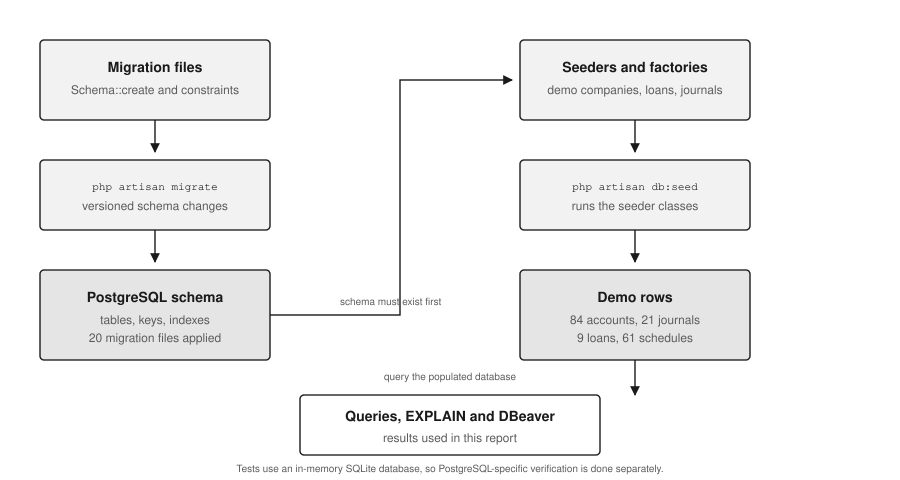
3.4 Eloquent and raw SQL
Eloquent is productive when a request needs relationships, casts, accessors, soft-delete filtering and model events. Raw SQL is preferable when the query shape is explicit, when a database feature is needed, or when the overhead of hydrating models is unnecessary. The two approaches can coexist. In this project, the customer, journal and loan paths that were converted are small enough to express directly in SQL, while booking, disbursement, repayment and reporting remain in the service and model layer.
| Concern | Eloquent | Raw SQL through the DB facade |
|---|---|---|
| Relationships | Loaded with with() and relationship methods. | Written as explicit joins and subqueries. |
| Casts and accessors | Applied automatically. | Must be reproduced in the mapping code. |
| Soft deletes | Global scope adds the filter. | The query must add deleted_at is null. |
| Model events | Fired on create, update and delete. | Bypassed completely. |
| Bulk work | Convenient but can be chatty. | One statement can touch many rows. |
| SQL control | Expressive but sometimes opaque. | Exact query text and plan. |
| Injection safety | Bindings handled by the builder. | Values must be passed as bindings, never concatenated. |
The converted code follows one rule: values are always bound. Column names cannot be bound, so the dynamic SET clauses are built from keys that come from Laravel's validated payload, not from raw request strings. The update examples in Sections 3.5 and 3.6 show the pattern. The customer update also appends updated_at and a deleted_at is null guard manually, because raw SQL does not inherit Eloquent's timestamps or soft-delete scope.
| Module | Operation | File | SQL primitive |
|---|---|---|---|
| Customers | List and search | LoanCustomerController | DB::select with joins and a correlated subquery |
| Customers | Update and account-name sync | LoanCustomerController | DB::update with bound values |
| Customers | Delete | LoanCustomerController | Soft-delete update plus account delete |
| Journals | Create draft | TransactionController | DB::insert |
| Journals | Update draft or status | TransactionController | DB::update |
| Journals | Delete draft | TransactionController | DB::transaction with two deletes |
| Journals | Status counts | TransactionController | DB::select with group by |
| Loans | List with filters | LoanController | DB::select with joins |
| Loans | Approve or reject | LoanLifecycle | DB::update with status guard |
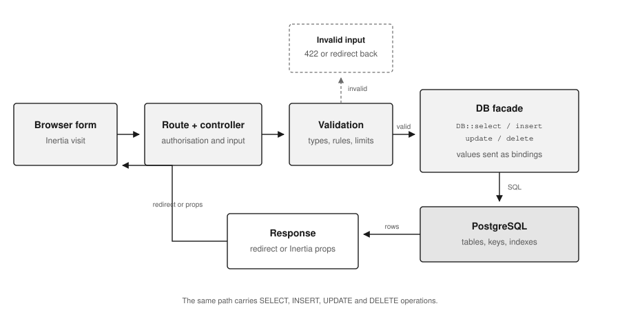
3.5 Customer CRUD in raw SQL
The customer index shows the read pattern. Listing 3.2 selects the customer row, the company name and the linked account, then uses a correlated subquery to fetch the latest posted balance for that account. The POSTED value is bound. The query adds lc.deleted_at is null because raw SQL does not apply Eloquent's soft-delete scope. The left joins preserve customers that have no company or account row, which makes the page tolerant of incomplete links.
$rows = DB::select(
'select lc.*, c.name as company_name, a.code as account_code, a.status as account_status,
(select je.balance_after from journal_entries je
inner join journal_transactions jt on jt.id = je.journal_transaction_id
where je.account_id = a.id and jt.status = ?
order by je.id desc limit 1) as account_balance
from loan_customers lc
left join companies c on c.id = lc.company_id
left join accounts a on a.id = lc.account_id
where lc.deleted_at is null
order by lc.customer_no asc',
['POSTED']
);app/Http/Controllers/Loan/LoanCustomerController.php, index().The update path in Listing 3.3 builds a SET list from the validated fields. The column names are identifiers, so they are interpolated; the values are bound. The updated_at timestamp and the deleted_at is null guard are added manually. After the update, the model is refreshed so the display-name accessor and the linked account name use the new values. The account name is updated only when the account code matches the customer number, which identifies an auto-created account rather than a manually linked one.
$updates = collect($data)->except(['gl_mode', 'link_account_id', 'company_id'])->all();
if ($updates !== []) {
$assignments = implode(', ', array_map(fn (string $column) => "{$column} = ?", array_keys($updates)));
$bindings = array_values($updates);
$bindings[] = now();
$bindings[] = $customer->id;
DB::update(
"update loan_customers set {$assignments}, updated_at = ? where id = ? and deleted_at is null",
$bindings
);
$customer->refresh();
}app/Http/Controllers/Loan/LoanCustomerController.php, update().Deletion is a soft delete followed by cleanup of the auto-created account. The controller first refuses the operation if the account already has journal entries, because removing a posted account would break the ledger. It then runs two statements inside DB::transaction: an update that sets deleted_at and updated_at, and a delete that removes the account only when its code matches the customer number. The soft delete keeps the customer row available to withTrashed() for audit and reporting.
3.6 Journal CRUD in raw SQL
The journal create path in Listing 3.4 generates the UUID in PHP, asks nextRef() for the next transaction number, and inserts a draft header. The effective_date is the business date supplied by the user. The insert sets created_at and updated_at explicitly because raw SQL bypasses Eloquent's timestamp handling.
$id = (string) Str::uuid();
$now = now();
DB::insert(
'insert into journal_transactions (id, description, ref, status, effective_date, created_at, updated_at)
values (?, ?, ?, ?, ?, ?, ?)',
[
$id,
trim($data['description']),
self::nextRef(),
TransactionStatus::DRAFT->value,
$data['effective_date'],
$now,
$now,
]
);
return redirect()->route('general-ledger.transactions.show', ['transaction' => $id]);app/Http/Controllers/GeneralLedger/TransactionController.php, store().The reference generator uses the database to find the largest numeric suffix. The substr(ref, 5) call removes the TXN- prefix, the cast converts the remainder to an integer, and coalesce returns zero when the table is empty. This works on both SQLite and PostgreSQL. The generator performs a read before the insert, and the ref column is not unique in the current schema.
$assignments = implode(', ', array_map(fn (string $column) => "{$column} = ?", array_keys($updates)));
$bindings = array_values($updates);
$bindings[] = now();
$bindings[] = $transaction->id;
DB::update(
"update journal_transactions set {$assignments}, updated_at = ? where id = ?",
$bindings
);app/Http/Controllers/GeneralLedger/TransactionController.php, update().Before the update, the controller checks whether the transaction is still a draft when the description or date changes, verifies the status transition, and runs the balance check before a move to submitted. The raw SQL only writes after those rules pass. This is an important division: business rules stay in PHP where they can produce useful validation messages, while the database write itself is explicit and parameterised.
DB::transaction(function () use ($transaction) {
DB::delete('delete from journal_entries where journal_transaction_id = ?', [$transaction->id]);
DB::delete(
'delete from journal_transactions where id = ? and status = ?',
[$transaction->id, TransactionStatus::DRAFT->value]
);
});app/Http/Controllers/GeneralLedger/TransactionController.php, destroy().The delete removes the child entries before the header and runs both statements in a transaction. The status condition on the second delete is a second guard: even if the earlier status check were bypassed, a posted header would not be removed. This preserves the rule that posted journals are corrected by reversal, not deletion.
The status counts are produced with a single aggregate query:
select status, count(*) as aggregate
from journal_transactions
group by status;app/Http/Controllers/GeneralLedger/TransactionController.php, stats().3.7 Loan read and status updates
The loan listing is a read query with two optional filters. Listing 3.8 joins the product and customer tables, filters soft-deleted loans, applies the status and loan-number filters only when they are present, and limits the result to 100 rows. The bound values are appended to a separate array, so the query text does not contain user input.
$sql = 'select l.id, l.loan_no, l.status, l.principal, l.total_repayable, l.maturity_date,
p.code as product_code, p.name as product_name,
c.customer_no, c.customer_type, c.first_name, c.middle_name, c.last_name, c.business_name
from loans l
left join loan_products p on p.id = l.loan_product_id
left join loan_customers c on c.id = l.loan_customer_id
where l.deleted_at is null';
$bindings = [];
if (! empty($data['status'] ?? null)) {
$sql .= ' and l.status = ?';
$bindings[] = $data['status'];
}
if (! empty($data['q'] ?? null)) {
$sql .= ' and lower(l.loan_no) like ?';
$bindings[] = '%'.strtolower(trim((string) $data['q'])).'%';
}
$sql .= ' order by l.created_at desc limit 100';
$loans = array_map(
fn (object $row) => self::presentBriefRow((array) $row),
DB::select($sql, $bindings)
);app/Http/Controllers/Loan/LoanController.php, index().Loan approval and rejection are simple status changes, so they were converted to raw updates in the lifecycle service. Listing 3.9 shows approval. The status guard remains in PHP, and the update also sets approved_at and updated_at. Rejection follows the same pattern without approved_at. Booking, disbursement, repayment and accrual remain in LoanLifecycle because each one creates or updates several rows and posts a journal; replacing that orchestration with controller SQL would duplicate business rules and weaken the transaction boundary.
DB::update(
'update loans set status = ?, approved_at = ?, updated_at = ? where id = ?',
[LoanStatus::Approved->value, now(), now(), $loan->id]
);
return $loan->refresh();app/Services/Loan/LoanLifecycle.php, approve(). reject() follows the same pattern without approved_at.3.8 Transactions and concurrency
The converted paths use DB::transaction where more than one statement must succeed together. Customer deletion wraps the soft delete and the account cleanup. Journal deletion wraps the entry delete and the header delete. Posting and reversal in the journal model lock the transaction row and the affected account rows with lockForUpdate before changing balances. The business-date advance locks the settings row and re-checks the unposted queue before it writes snapshots and moves the date.
These choices map onto the ACID properties. Atomicity is provided by the transaction boundary: a failure rolls the whole operation back. Consistency is supported by validation, foreign keys and the balance check. Isolation is provided by row locks where two users could otherwise act on stale data. Durability is provided by PostgreSQL's write-ahead log. The reference generator performs a read and a later insert without a lock, and ref has no unique constraint; this is the concurrency behaviour of the current prototype.
Raw SQL does not remove the need for application rules. The converted statements are shorter than their Eloquent equivalents, but they still depend on validation, status checks and transactions. Chapter Four describes the constraints and query plans that support these rules.
Chapter Four SQL, Performance and Tools
4.1 SQL query catalogue
The report uses a small set of queries that cover the main database tasks: listing related records, aggregating balances, summarising statuses, inspecting the catalog and reading a query plan. Table 4.1 maps each query to its purpose and the SQL features it demonstrates.
| Query | Purpose | SQL features |
|---|---|---|
| Customer ledger | List customers with company, account and latest posted balance. | left join, correlated subquery, order by, bound filter |
| Loan portfolio | Show loan terms, customer, product and outstanding amount. | join, left join, sum, group by |
| Journal summary | Count transactions by status. | group by, count |
| Account categories | Count accounts and total display balance by category. | group by, sum |
| Foreign-key inventory | List enforced relationships from the catalog. | information_schema, joins |
| Foreign-key index check | Find foreign-key columns without a leading index. | not exists, pg_index |
| Query plan | Measure planning and execution behaviour. | EXPLAIN (ANALYZE, BUFFERS) |
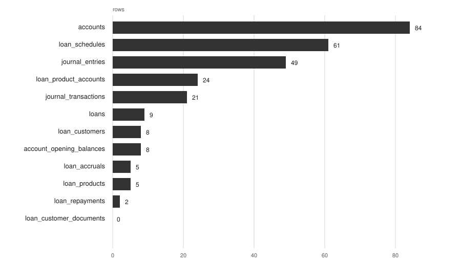
4.2 Join and aggregate queries
Listing 4.1 is the reporting form of the customer query. It uses concat_ws to build the display name and a correlated subquery to fetch the latest posted balance. The result in Table 4.2 shows the eight seeded customers, including five whose accounts have a posted balance and three whose accounts do not yet have a posted entry.
select lc.customer_no,
trim(concat_ws(' ', lc.first_name, lc.middle_name, lc.last_name)) as customer_name,
lc.kyc_tier,
lc.kyc_status,
a.code as account_code,
(select je.balance_after
from journal_entries je
join journal_transactions jt on jt.id = je.journal_transaction_id
where je.account_id = a.id and jt.status = 'POSTED'
order by je.id desc
limit 1) as account_balance
from loan_customers lc
left join accounts a on a.id = lc.account_id
where lc.deleted_at is null
order by lc.customer_no;| Customer no. | Name | Tier | KYC | Account | Balance |
|---|---|---|---|---|---|
| LC-2026-00001 | Adaeze Ngozi Okafor | tier3 | verified | LC-2026-00001 | 196,000.00 |
| LC-2026-00002 | Tunde Ayodele Bakare | tier3 | verified | LC-2026-00002 | — |
| LC-2026-00003 | Fatima Aisha Bello | tier3 | in review | LC-2026-00003 | — |
| LC-2026-00004 | Emeka Nwosu | tier3 | verified | LC-2026-00004 | — |
| LC-2026-00005 | Amina Yusuf Abdullahi | tier2 | pending | LC-2026-00005 | 325,000.00 |
| LC-2026-00006 | Chiamaka Eze | tier3 | verified | LC-2026-00006 | 59,400.00 |
| LC-2026-00007 | Ibrahim Musa Danladi | tier3 | verified | LC-2026-00007 | 200,000.00 |
| LC-2026-00008 | Blessing Adeyemi | tier3 | pending | LC-2026-00008 | 38,800.00 |
Listing 4.2 aggregates the loan portfolio. It joins each loan to its customer and product, left-joins the schedule rows, and subtracts the paid components from the scheduled total to estimate the outstanding amount. The coalesce returns zero for loans without schedules. The result in Table 4.3 shows nine loans across the full lifecycle, including one active loan with a penalty above its original repayable total.
select l.loan_no,
c.customer_no,
p.code as product_code,
l.principal,
l.total_repayable,
l.status,
l.maturity_date,
coalesce(sum(s.total_due
- s.principal_paid
- s.interest_paid
- s.fee_paid
- s.penalty_paid), 0) as outstanding
from loans l
join loan_customers c on c.id = l.loan_customer_id
join loan_products p on p.id = l.loan_product_id
left join loan_schedules s on s.loan_id = l.id
where l.deleted_at is null
group by l.id, l.loan_no, c.customer_no, p.code,
l.principal, l.total_repayable, l.status, l.maturity_date
order by l.created_at desc;numeric(20,2).| Loan | Customer | Product | Principal | Repayable | Status | Outstanding |
|---|---|---|---|---|---|---|
| LN-2026-00009 | LC-2026-00001 | SAL | 200,000.00 | 240,000.00 | active | 240,000.00 |
| LN-2026-00002 | LC-2026-00002 | SAL | 120,000.00 | 144,000.00 | pending approval | 144,000.00 |
| LN-2026-00003 | LC-2026-00003 | SME | 200,000.00 | 238,969.10 | approved | 238,969.10 |
| LN-2026-00004 | LC-2026-00004 | EMG | 50,000.00 | 56,115.38 | rejected | 56,115.38 |
| LN-2026-00001 | LC-2026-00001 | SAL | 80,000.00 | 88,800.00 | draft | 88,800.00 |
| LN-2026-00006 | LC-2026-00006 | GRP | 60,000.00 | 65,030.77 | active | 65,191.59 |
| LN-2026-00007 | LC-2026-00007 | SAL | 100,000.00 | 120,000.00 | closed | 0.00 |
| LN-2026-00008 | LC-2026-00008 | EMG | 40,000.00 | 44,892.31 | written off | 44,892.31 |
| LN-2026-00005 | LC-2026-00005 | SME | 300,000.00 | 358,453.65 | active | 318,453.65 |
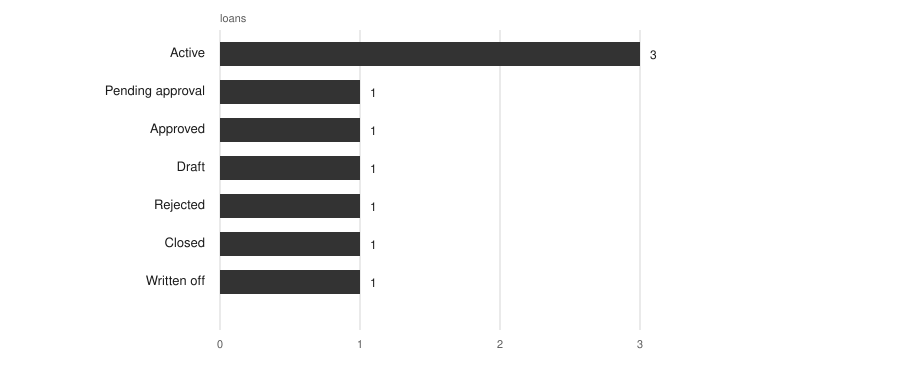
Listing 4.3 is a compact status summary. It returns one row because every seeded journal is posted, but the query is the same one the application uses for its header cards. Listing 4.4 groups accounts by category and sums the cached display balance; Figure 4.3 shows the top ten categories by account count.
select status, count(*) as aggregate
from journal_transactions
group by status
order by status;POSTED | 21.select category,
count(*) as accounts,
sum(display_balance) as total_balance
from accounts
group by category
order by accounts desc, category;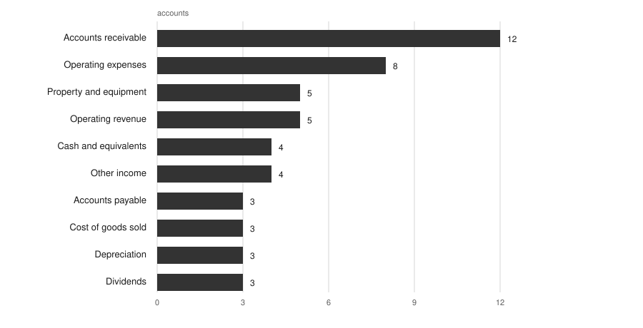
4.3 Query plans and performance
Each query was run with EXPLAIN (ANALYZE, BUFFERS, FORMAT TEXT) against the seeded PostgreSQL database. Table 4.4 summarises the main plan nodes and timings. The numbers are small because the database is small: 84 accounts, 49 journal entries and 61 schedules fit in a few pages. The purpose is to read the plan shape at this data size.
| Query | Main plan nodes | Plan | Exec | Observation |
|---|---|---|---|---|
| Customer listing | Index scan on loan_customers_customer_no_unique, nested loop left joins, subplan sequential scan on journal_entries | 1.240 | 0.255 | The customer lookup uses an index, but the balance subquery scans the entry table for each customer. |
| Loan portfolio | Sequential scan on loans, hash right join on loan_schedules, group aggregate | 1.888 | 0.573 | Sequential scans are rational at nine loans and sixty-one schedules. |
| Journal summary | Sequential scan on journal_transactions, group aggregate | 0.350 | 0.138 | Status is unindexed, but the table is only twenty-one rows. |
The customer plan shows the access path clearly. Its outer loop uses the unique customer-number index, while the correlated balance subquery performs a sequential scan on journal_entries and removes forty-eight of forty-nine rows for each customer. At this size the scan is cheap. The loan plan shows a different choice: PostgreSQL reads loans and loan_schedules sequentially and uses a hash join. A sequential scan is a valid choice when a table is smaller than a few pages, because reading it sequentially is cheaper than following an index.
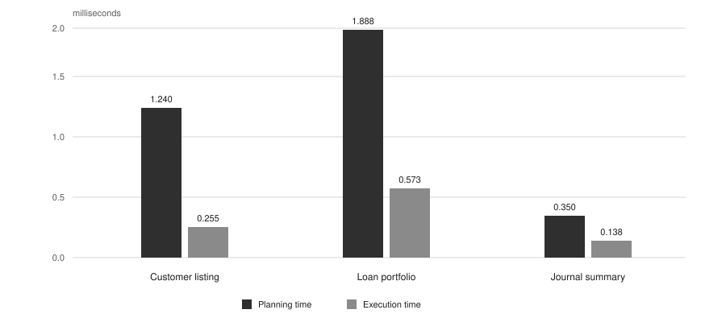
EXPLAIN ANALYZE. Planning dominates because the data is small and the queries are short.These timings are a snapshot from one development machine, not a benchmark. They show the access paths the planner chooses for the current tables and how the existing indexes are used.
4.4 Laravel database tools
Laravel provides a complete toolchain around the database. The project uses the schema builder for migrations, seeders for demonstration data, Eloquent for relationship-rich work, the query builder for fluent filters and the DB facade for the converted raw SQL. Artisan exposes the same tools from the command line, and Laravel Boost provides schema and query introspection for development.
| Tool | Role in the project | Example |
|---|---|---|
| Migrations | Versioned schema creation and change. | php artisan migrate |
| Seeders | Repeatable demonstration data. | php artisan db:seed |
| Factories | Test data for feature tests. | User::factory()->create() |
| Eloquent | Models, relationships, casts and soft deletes. | Loan::with('schedules')->find($id) |
| Query builder | Fluent SQL for common filters. | DB::table('loans')->where(...) |
| DB facade | Raw SQL with bound parameters. | DB::select($sql, $bindings) |
| Transactions | Atomic multi-statement work and row locks. | DB::transaction(...), lockForUpdate() |
| Artisan inspection | Show database, table and model metadata. | db:show, db:table, model:show |
| Schema dump | Compact schema file for faster test setup. | php artisan schema:dump |
| Laravel Boost | Read schema, run read-only queries and search docs. | database-schema, database-query |
The commands used in the project were:
php artisan migrate:status
php artisan db:seed --no-interaction
php artisan db:show
php artisan db:table loans
php artisan model:show "App\Models\Loan\Loan"
php artisan test --compact4.5 DBeaver
DBeaver is an open-source universal database client. It connects to PostgreSQL through JDBC and provides a Database Navigator for schemas, tables, columns, indexes and constraints; a SQL editor with autocomplete and a result grid; visual execution plans; ER diagrams; data export and import; and query history. In this project it was connected to the local dammy_micro database on PostgreSQL 18.1.
DBeaver was used to inspect the live schema after the migrations, to confirm the row counts and column definitions used in this chapter, to run the loan portfolio query, and to view its execution plan. Figures 4.5 to 4.9 show the Database Navigator and table views, the query editor and result grid, and the plan for the loan portfolio query.
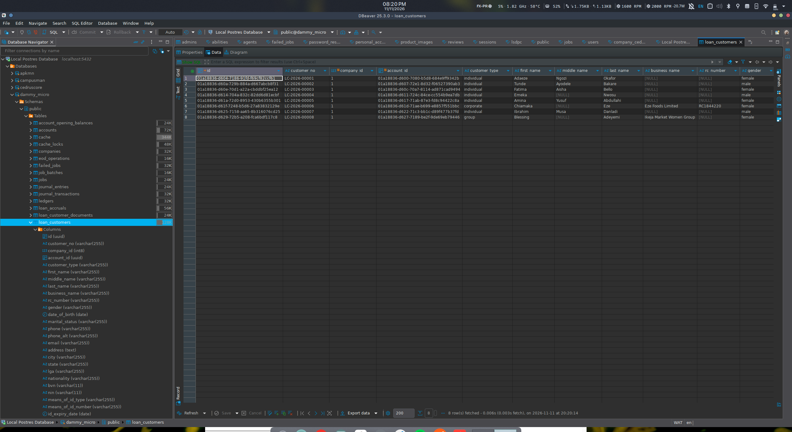
loan_customers table. The left panel lists the schema tables and columns; the grid shows the eight seeded customers.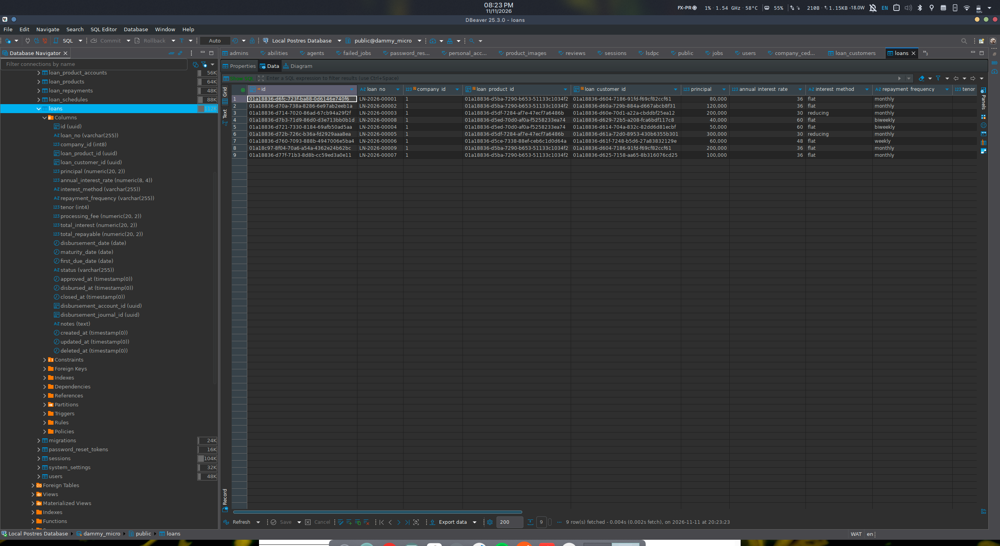
loans table. The nine loans cover the draft, pending, approved, active, rejected, closed and written-off states.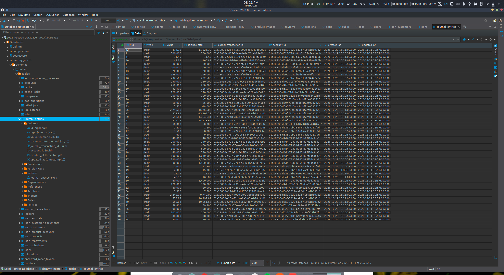
journal_entries, showing the debit and credit lines, values and running balances used by the ledger.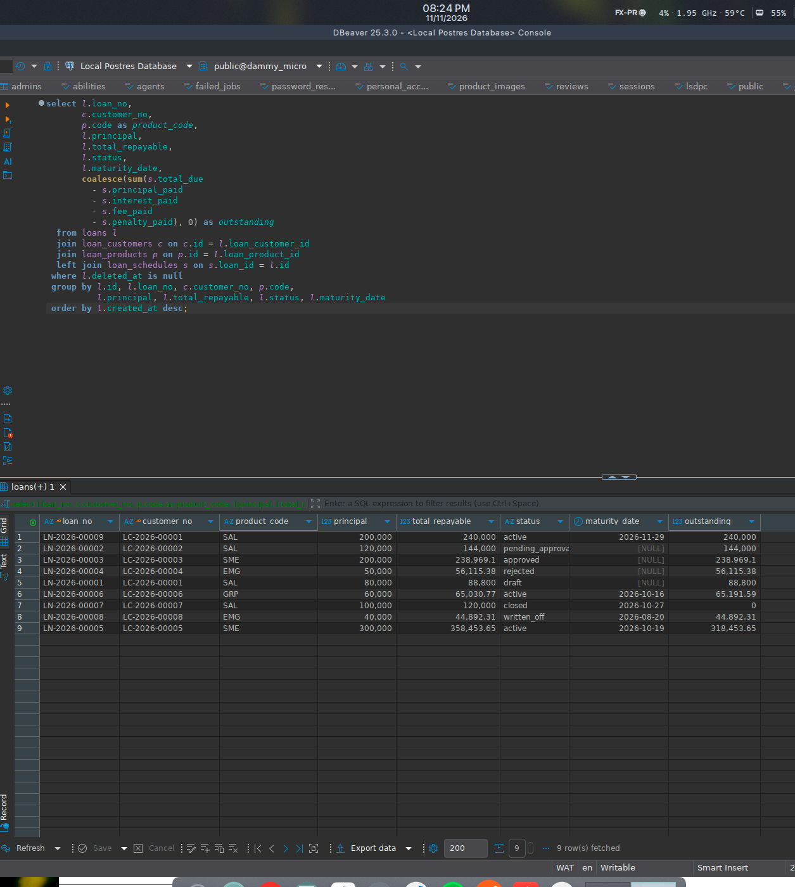
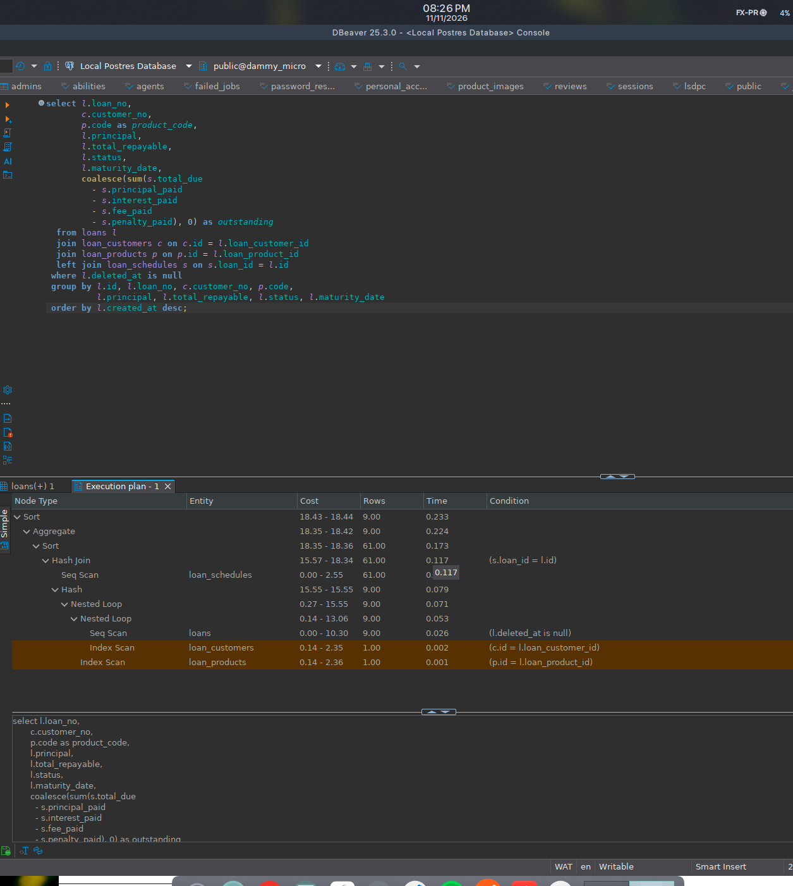
loans and loan_schedules, a hash join, and index scans on the customer and product tables.DBeaver complements the command-line tools. Artisan and the test suite verify the application behaviour; DBeaver makes the live catalog and query plans visible, which is useful when a migration and the database disagree. The execution-plan view is particularly helpful for spotting a sequential scan on a table that is expected to use an index.
4.6 Testing and results
The project uses Pest. The full suite passed before the conversion (80 tests) and after it (81 tests and 582 assertions). The extra test covers the joined loan listing introduced by the raw SQL read. The customer, journal and loan suites exercise the converted paths, including validation failures, status transitions, soft deletes and the joined listing.
| Test area | Tests | What is covered | Result |
|---|---|---|---|
| Customers | 11 | Create, index, show, update, delete, KYC rules and search. | Pass |
| Journals | 24 | Create, edit, submit, post, reverse, delete, entries and paging. | Pass |
| Loans | 4 | Schedule math, full lifecycle, penalties and the joined listing. | Pass |
| Full suite | 81 | All feature and unit tests. | Pass, 582 assertions |
The test suite uses in-memory SQLite, so a passing test does not by itself prove that the SQL works on PostgreSQL. I therefore ran the journal insert, update and delete statements against PostgreSQL inside a transaction and rolled the transaction back. The check returned verified=1 and left no row behind. The customer, loan and aggregate queries were executed directly against the seeded PostgreSQL database. The reference query was also run in PostgreSQL to confirm that cast(substr(ref, 5) as integer) returns the expected maximum.
The tests and the catalog queries answer different questions. The tests show that the application paths behave correctly, while the catalog queries show which constraints and indexes exist in the live database. Both were used in this project.
4.7 Conclusion
This report has documented the database work completed for DAMS Micro. The PostgreSQL schema contains sixteen domain tables, two hundred and one columns, twenty-one foreign keys and thirty-seven indexes. The schema supports the general ledger, customer records, loan products, schedules, repayments, accruals and operational settings. The entity-relationship diagrams and schema tables show how those records connect.
The implementation uses Laravel migrations and seeders to create and populate the database, Eloquent for relationship-rich work, and bound raw SQL for the selected customer, journal and loan operations. The converted paths retain their validation and status rules, and the full Pest suite passes after the conversion. The reporting queries, their result sets and the query plans show how the database answers the questions the application asks.
The project met its aim: it produced a working database-backed application, a documented schema, a set of raw SQL data-access paths and a repeatable way to build and test the database. The DBeaver figures and the schema catalog queries make the live database inspectable, and the report records the design and implementation decisions that produced it.
References
- PostgreSQL Global Development Group. PostgreSQL 18 Documentation. Available at: https://www.postgresql.org/docs/18/ (accessed November 2026).
- Laravel. Laravel 13 Documentation: Database, Queries, Migrations, Eloquent and Transactions. Available at: https://laravel.com/docs (accessed November 2026).
- DBeaver. DBeaver Documentation. Available at: https://dbeaver.io/docs/ (accessed November 2026).
- Elmasri, R. and Navathe, S. B. Fundamentals of Database Systems. Pearson.
- Silberschatz, A., Korth, H. F. and Sudarshan, S. Database System Concepts. McGraw-Hill.
- Lagos State University. Revised Curriculum for the BSc Computer Science Programme. Department of Computer Science, Faculty of Computing.
- Aje, D. DAMS Micro Source Code, Migrations and Seeders. Unpublished project materials, 2026.
Appendix A Schema summary
The table summarises the sixteen domain tables in the live PostgreSQL database. Row counts are from the seeded development database on 11 November 2026.
| Table | Primary key | Rows | Cols | FKs | Idx |
|---|---|---|---|---|---|
companies | id (uuid) | 1 | 5 | 0 | 1 |
ledgers | id (uuid) | 2 | 6 | 1 | 1 |
accounts | id (uuid) | 84 | 13 | 1 | 1 |
journal_transactions | id (uuid) | 21 | 9 | 0 | 1 |
journal_entries | id (bigint) | 49 | 8 | 0 | 1 |
account_opening_balances | id (bigint) | 8 | 6 | 1 | 1 |
eod_operations | id (bigint) | 0 | 7 | 0 | 1 |
system_settings | id (bigint) | 2 | 5 | 0 | 1 |
loan_customers | id (uuid) | 8 | 44 | 2 | 7 |
loan_customer_documents | id (uuid) | 0 | 9 | 1 | 2 |
loan_products | id (uuid) | 5 | 19 | 1 | 3 |
loan_product_accounts | id (uuid) | 24 | 6 | 2 | 3 |
loans | id (uuid) | 9 | 26 | 5 | 6 |
loan_schedules | id (uuid) | 61 | 17 | 1 | 3 |
loan_repayments | id (uuid) | 2 | 13 | 3 | 2 |
loan_accruals | id (uuid) | 5 | 8 | 3 | 3 |
The totals are 16 tables, 201 columns, 21 foreign keys and 37 indexes across the domain tables. The exact count of indexes can change when Laravel adds an implicit index for a unique constraint.
Appendix B Inspection and verification queries
The following queries were used to inspect the live catalog. They are read-only and can be run in DBeaver or with the Laravel Boost query tool.
B.1 Foreign-key inventory
select tc.table_name,
kcu.column_name,
ccu.table_name as foreign_table,
ccu.column_name as foreign_column
from information_schema.table_constraints tc
join information_schema.key_column_usage kcu
on tc.constraint_name = kcu.constraint_name
and tc.table_schema = kcu.table_schema
join information_schema.constraint_column_usage ccu
on ccu.constraint_name = tc.constraint_name
and ccu.table_schema = tc.table_schema
where tc.constraint_type = 'FOREIGN KEY'
and tc.table_schema = 'public'
order by tc.table_name, kcu.column_name;
B.2 Foreign-key columns without a leading index
select tc.table_name, kcu.column_name
from information_schema.table_constraints tc
join information_schema.key_column_usage kcu
on tc.constraint_name = kcu.constraint_name
and tc.table_schema = kcu.table_schema
where tc.constraint_type = 'FOREIGN KEY'
and tc.table_schema = 'public'
and not exists (
select 1
from pg_index i
join pg_class t on t.oid = i.indrelid
join pg_namespace n on n.oid = t.relnamespace
join pg_attribute a on a.attrelid = t.oid and a.attnum = i.indkey[0]
where n.nspname = 'public'
and t.relname = tc.table_name
and a.attname = kcu.column_name
)
order by tc.table_name, kcu.column_name;
B.3 Table and index statistics
select relname as table_name,
n_live_tup as estimated_rows,
pg_size_pretty(pg_total_relation_size(relid)) as total_size,
seq_scan,
idx_scan
from pg_stat_user_tables
where schemaname = 'public'
order by pg_total_relation_size(relid) desc;
B.4 Raw SQL verification on PostgreSQL
The write check opened a transaction, inserted a temporary journal, updated it, read it back, deleted it and rolled the transaction back. The output was verified=1. A report-ready version of the check is:
begin;
insert into journal_transactions
(id, description, ref, status, effective_date, created_at, updated_at)
values
('00000000-0000-0000-0000-000000000000',
'Raw SQL verification', 'TXN-VERIFY', 'DRAFT',
'2026-11-11', now(), now());
update journal_transactions
set description = 'Raw SQL verification updated',
updated_at = now()
where id = '00000000-0000-0000-0000-000000000000';
select count(*) from journal_transactions
where id = '00000000-0000-0000-0000-000000000000';
delete from journal_transactions
where id = '00000000-0000-0000-0000-000000000000';
rollback;
The verification row was never committed. The application uses generated UUIDs; the all-zero value is illustrative.